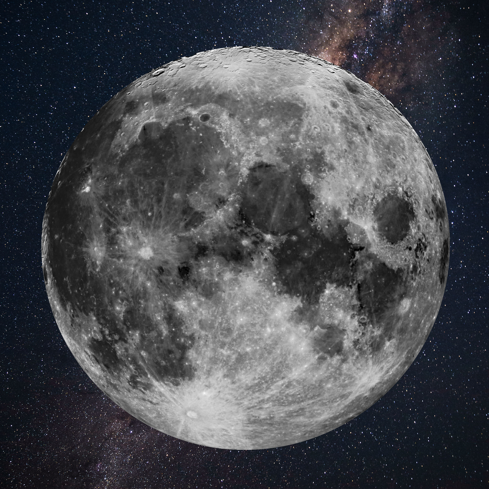
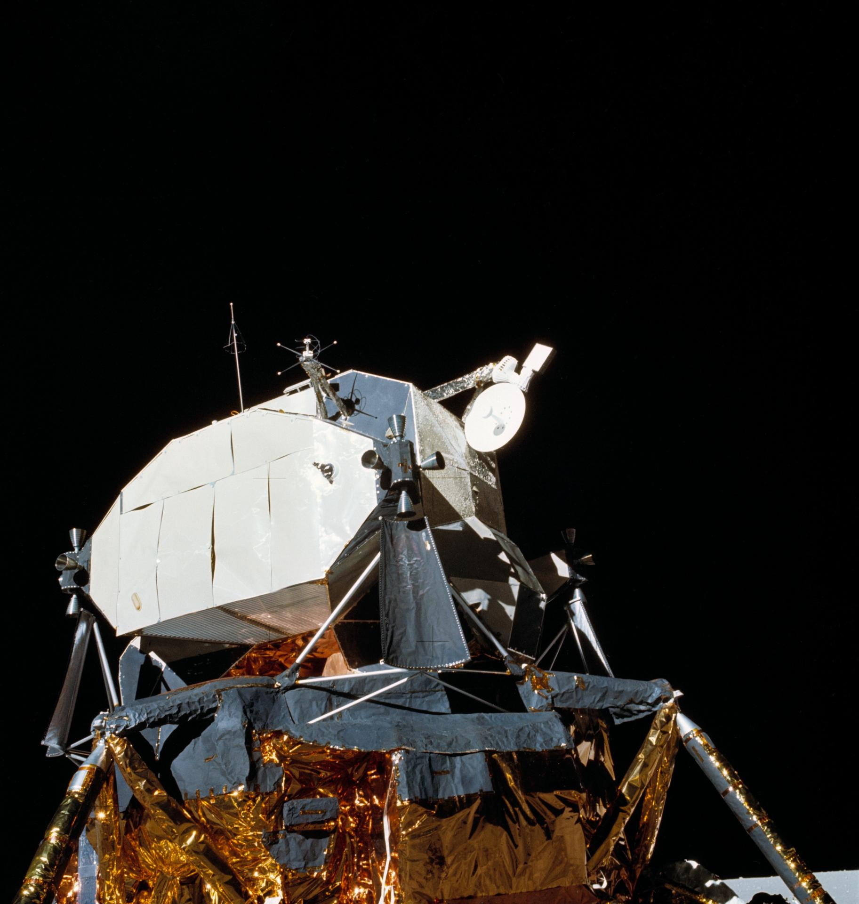
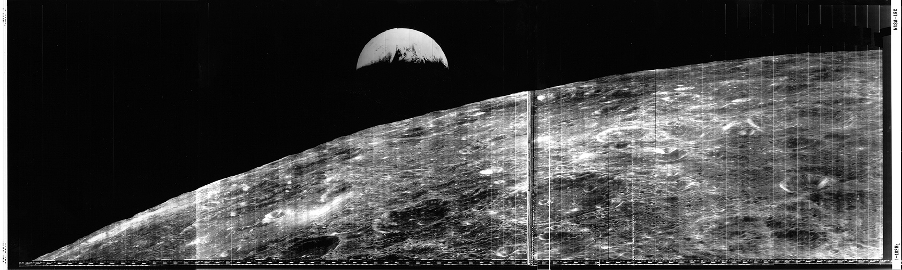

about
Lunar is a source-based distribution for 32 and 64bit Intel or AMD systems with simple, yet powerful package management and system administration tools. It is built entirely by compiling source code, using custom optimizations.
This is what sets Lunar apart. It makes customization a breeze – you choose the compile options before a module is built, and install a lean and uncluttered system that has exactly what you need. Nothing more, or less.
highlight1

highlight2
A list of DEs? Icons of available DEs instead of pic?

highlight3
List of popular apps? Apps icons instead of picture.

download
Something about using the daily instead of ‘stable’?